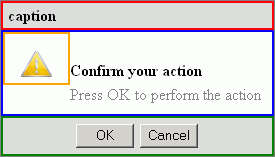

Version 3.0.0
Confirmation |
|||||||||||||||||||||||||||||||||||||||||||||||||||
|
Developer’s Guide Home
Installation and Configuration Common Concepts Components Index Border Layout Panel Calendar Chart Command Button Command Link Composite Filter Confirmation Data Table Date Chooser Day Table Drop Down Field Dynamic Image Folding Panel For Each Graphic Text Hint Label Input Text Input Textarea Layered Pane Level Indicator Popup Layer Popup Menu Select Boolean Checkbox Select Many Checkbox Select One Radio Spinner Suggestion Field Tabbed Pane Tab Set Tree Table Two List Selection Window Focus Load Bundle Scroll Position Ajax Framework Validation Framework Tag Reference API Reference |
Key Features
Invoking the ConfirmationTo add the Confirmation component to the page, use the <o:confirmation> tag. The most common way of using the Confirmation component is attaching it to some event of some particular component, which will result a confirmation to be shown prior to executing a handler for the specified event. For example you can attach the Confirmation component to the "click" event of a <h:commandButton> component to show a confirmation before performing that button's action. Note that the event string should be without the "on" prefix, for example "click" instead of "onclick". You can attach the Confirmation component to another component in two ways. The first way is to place the <o:confirmation> tag right into a component whose action should be confirmed. The event whose execution should be confirmed can be customized using the event attribute. The default value for this attribute is "onclick". <h:commandButton value="Delete" onclick="deleteSelectedItems()"> <o:confirmation event="click"/> </h:commandButton> Note that the event attribute in this example is declared for demonstration purposes only, and since "onclick" is the default value for this attribute, its declaration can simply be omitted. The second way of attaching the Confirmation component is placing the <o:confirmation> tag besides the component (or tag) whose action should be confirmed, and binding the Confirmation to that component explicitly using the for attribute of the <o:confirmation> tag. This way can be used for attaching to JSF components as in the first approach, though this way also allows binding to events of arbitrary HTML elements. The for attribute should be assigned with the id of a JSF component or id of any HTML element, whose event should be listened to:
As for the case with inserting <o:confirmation> into the associated component, the event attribute specifies the event whose execution should be confirmed. Here's an example of attaching to a HTML "span" tag. <span id="editData" ondblclick="editData()">...</span> <o:confirmation for=":editData" event="dblclick"/> In addition to the automatic attaching of the Confirmation component to another component, it is also possible to invoke Confirmation programmatically using the client-side API, which allows making a flexible logic for showing confirmation dialogs. When using the Confirmation component's client-side API you would usually need to turn off automatic attachment mechanism to fully control the behavior with explicit JavaScript invocations. To do this you should declare the standalone attribute and assign it the true value. When you need to call the Confirmation component from JavaScript code, you can use the runConfirmedFunction(func) function. The the func is a parameter that specifies a function that should be executed. In the following example, when the onclick event occurs, the Confirmation component with "form1:confirmaion" client-side id is called. When the user clicks OK, the deleteSelectedItems() function is executed. <h:form id="form1"> <o:confirmation id="confirmation" standalone="true"/> <input id="button1" type="button" value="Delete" onclick="O$('form1:confirmation').runConfirmedFunction(function() {deleteSelectedItems();})"/> </h:form> Customizing Caption ButtonsBy default Confirmation component displays the close button on the right side of its caption, though a flexible way of customizing caption buttons is provided. Here are some of the scenarios that can be addressed:
The basis for these customizations is the <o:captionArea> tag, which can be placed into the <o:confirmation> tag to customize the set of buttons displayed in the caption. This tag has an alignment attribute, which defines the caption side where the area should be placed. It can take two values: "right" (the default value), and "left". Adding the <o:captionArea> tag removes the default close button and allows you to customize the set of buttons by placing components inside of this tag. It is possible to place the following components into caption area tags:
All of the button tags listed above have the following common attributes:
In addition they have the following attributes of their own. For <o:maximizeWindowButton>:
For <o:minimizeWindowButton>:
For <o:closeWindowButton> and <o:captionButton> tags:
In addition to these attributes, the <o:captionButton> tag has the action attribute that specifies a server action that should be executed when the button is pressed, similar to the action attribute of the standard <h:commandButton> tag or the <o:commandButton> tag. In addition, like in the <o:commandButton> tag, it is possible to use built-in Ajax capabilities in the <o:captionButton> tag with the render and execute attributes (see the CommandButton documentation for details on using these attributes. Here's an example of specifying a window closing button with a custom image and a hint: <h:commandButton value="Delete" onclick="deleteSelectedItems()"> <o:confirmation event="click"> <o:captionArea> <o:closeWindowButton imageUrl="close.gif" hint="Close"/> <o:captionArea> </o:confirmation> </h:commandButton> You can also place more than one <o:captionArea> tags, which allows specifying custom areas on both caption sides. Customizing the Content AreaCustomizing the Content with AttributesBy default, the Confirmation component shows a main instruction, supplementary text below, and an icon with an exclamation mark on the left. The default instruction text is "Confirm your action". To change it, use the message attribute. If you don't want to show any instruction, set an empty string for this attribute. The text specified in the message attribute is bold by default. You can customize a style for the main instruction in the normal and rollover states using the messageStyle, messageClass, rolloverMessageStyle, and rolloverMessageClass attributes. The default supplementary text is "Press OK to perform the action". To change it, use the details attribute. If you want no supplementary text to be displayed, set an empty string for this attribute. You can specify a style for the supplementary text in the normal and rollover states with the detailsStyle, detailsClass, rolloverDetailsStyle, and rolloverDetailsClass attributes. Note To set a different graphic for the icon to the left of the main instuction, use the messageIconUrl attribute. You can specify whether the icon is to be displayed using the showMessageIcon attribute. By default, this attribute is set to "true". The Confirmation component has two buttons labeled "OK" and "Cancel" by default. You can specify the button texts by using the okButtonText and cancelButtonText attributes. When the Confirmation component opens, one of the buttons is always focused. By default, it is the OK button. You can change this setting by using the defaultButton attribute. Note that this attribute is an enumeration, where the valid values are "ok" for the OK button and "cancel" for the Cancel button. You can customize styles for the OK and Cancel buttons in the normal and rollover states using the following attributes:
By default, the Confirmation component has no title bar. To add it, use the caption attribute. You can customize a style for the title with the captionStyle and captionClass attributes. If you want to have a Close button on the title bar, set the showCloseWindowButton attribute to "true" (by default, it is "false"). To change the default icon of the Close button, use the closeButtonImageUrl attribute. The following example shows some of the attributes defining the content of the Confirmation component: <o:confirmation id="conf" for="button1" event="click" caption="Confirm" message="Delete selected items?" details="Click Yes to delete selected items" showMessageIcon="false" okButtonText="Yes" cancelButtonText="No"/> <input id="button1" type="button" value="Delete" onclick="deleteSelectedItems()"/> Customizing the Content with Arbitrary ComponentsAnother way to customize the content areas of the Confirmation component is by using facets. There are four facets to configure four Confirmation areas: "message", "details", "icon", "caption". Here is an example of using all of these facets: <o:confirmation id="conf" okButtonText="Yes" cancelButtonText="No"> <f:facet name="message"> <h:outputText value="Delete selected items?"/> </f:facet> <f:facet name="details"> <h:panelGroup> <h:outputText value="Click Yes to delete selected items."/> <f:verbatim><br/></f:verbatim> <h:outputText value="Click No to cancel the action."/> </h:panelGroup> </f:facet> <f:facet name="caption"> <h:outputText value="Confirm"/> </f:facet> <f:facet name="icon"> <h:graphicImage url="warningIcon.gif"/> </f:facet> </o:confirmation> Note that customizing the Confirmation using facets has a priority over attributes. Customizing the Content with a JavaScript FunctionThere is an ability to set text for the main instruction, supplementary details and buttons by using a JavaScript function setTexts(messageText, detailsText,okButtonText, cancelButtonText). In the example below, the Confirmation component with the id "conf" uses the default values of the main instruction and buttons. However, when the user clicks the Delete button, the main instruction text and button labels are changed to the values specified in the JavaScript function before the Confirmation is displayed. <o:confirmation id="conf" standalone="true"/> <h:outputLink id="linkInvoker" value="" onclick="O$('form1:conf').setConfirmationTexts('Delete selected items?', 'Click Yes to delete selected items', 'Yes', 'No'); O$('form1:conf').runConfirmedFunction(function(){deleteSelectedItems();}); return false;"> <h:outputText value="Remove"/> </h:outputLink> Configuring the PresentationTo set the size for the Confirmation component, use the width and height attributes, which you can set in pixels, centimeters, etc. By default, the Confirmation component has the width of 275 px and its height is defined by the content. By default, the Confirmation component is displayed as a modal window in the center of the visible area of the page. There are a number of ways to specify the location of a Confirmation component:
Setting the Display BehaviorThere are two ways to close the confirmation dialog besides choosing between one of the OK/Cancel buttons or pressing the "close" caption button:
In the example below, the Confirmation component is aligned with the Delete button and has the width of 250 px. It can be dragged by the mouse. If the user clicks outside of the Confirmation component, it is closed with no action executed. <o:confirmation id="conf" for="button1" width="250px" alignToInvoker="true" draggable="true" hideOnOuterClick="true"/> <input id="button1" type="button" value="Delete" onclick="deleteSelectedItems()"/> Customizing StylesYou can define a style for the Confirmation component when it is in the normal and rollover states with the style, styleClass, rolloverStyle, and rolloverStyleClass attributes. If you want to apply styles for a specific of the Confirmation component, use the following attributes:
The following example shows the styles defined for all the parts of the Confirmation component: captionStyle="border:2px solid red;" contentStyle="border:2px solid blue;" iconAreaStyle="border:2px solid orange;" buttonAreaStyle="border:2px solid green;" And here is the result:  By using the modalLayerStyle and modalLayerClass attributes, you can also apply a style to the visible part of the page which is not covered by the Confirmation component. Client-Side EventsThe Confirmation component supports a set of standard client-side events that can be customized to alter the component's behavior. These are onclick, ondblclick, onmousedown, onmouseover, onmouseup, onmouseout, onmousemove, onkeydown, onkeypress, onkeyup. Client-Side APIThe Confirmation component supports the following client-side API. All of them are described in the sections Invoking the Confirmation and Customizing the Content Area:
In addition to these functions, the Confirmation component supports all the functions of the PopupLayer component. |
||||||||||||||||||||||||||||||||||||||||||||||||||
| © 2010 TeamDev Ltd. | |||||||||||||||||||||||||||||||||||||||||||||||||||